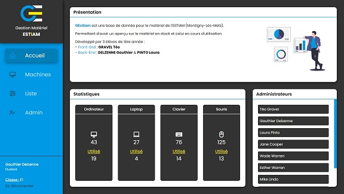
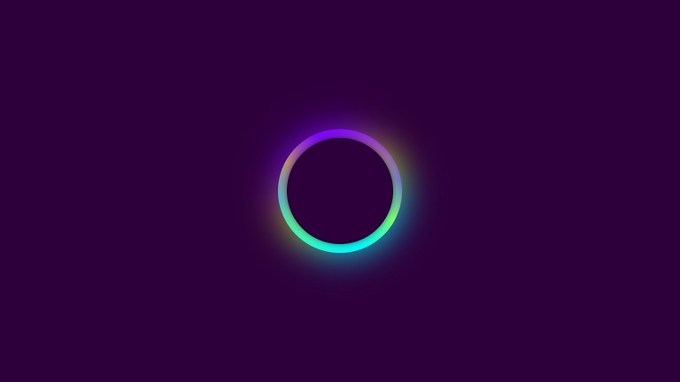
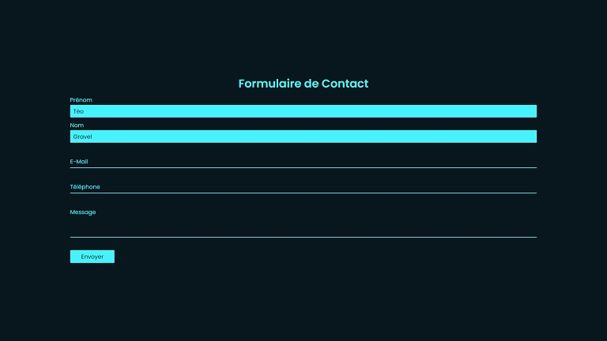
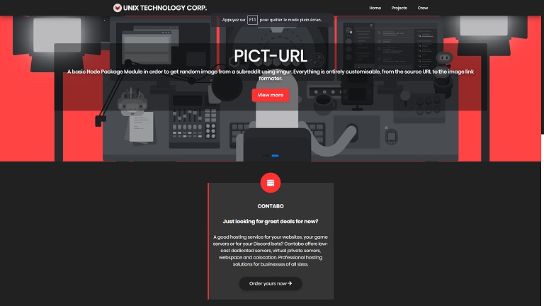

Mes
Projets
Sur cette page, vous pourrez retrouver tous mes projets menés à bien jusqu'à présent. Avec la présentation et l'utilité de chaque projet.
Sur cette page, vous pourrez retrouver tous mes projets menés à bien jusqu'à présent. Avec la présentation et l'utilité de chaque projet.
Développé pour l'ESTIAM (Montigny-Lès-Metz), GEstiam est un gestionnaire de matériel pour connaître les stocks d'ordinateurs et leurs composants, ainsi que les écrans, et tous les outils d'informatiques nécessaires.
Petit challenge, qui était de créer une page artistique avec comme contrainte de n'avoir qu'une seule et unique balise "div". J'ai donc créé un cercle, qui tourne et qui a des couleurs multicolores.
Un simple formulaire avec des modifications de certaines propriétés lorsqu'on sélectionne ou lorsqu'on écrit dans les balises "input" du formulaire.
Groupe de développeurs, avec comme dirigeant principal Delzenne Gauthier, c'est une organisation à but non lucratif qui essaye de se faire connaître dans le monde du développement.
